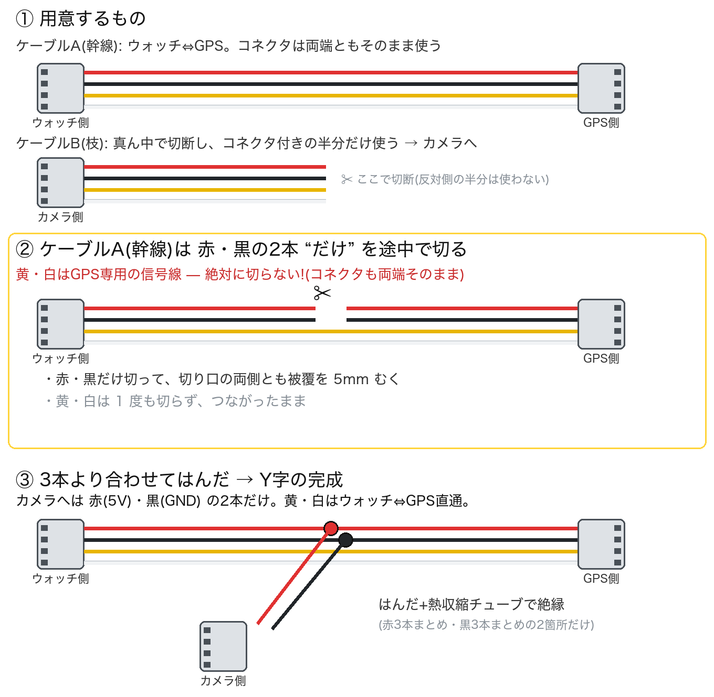
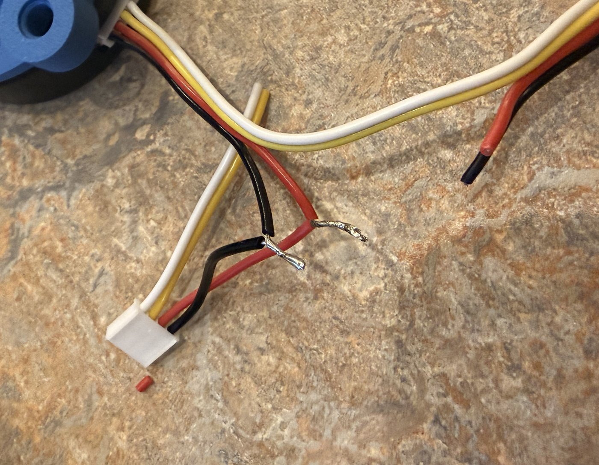
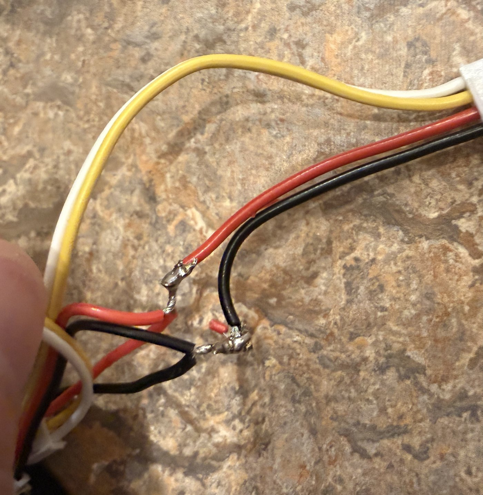
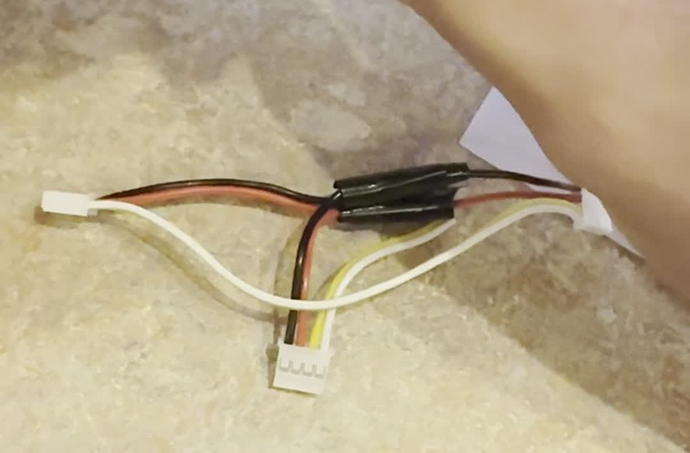
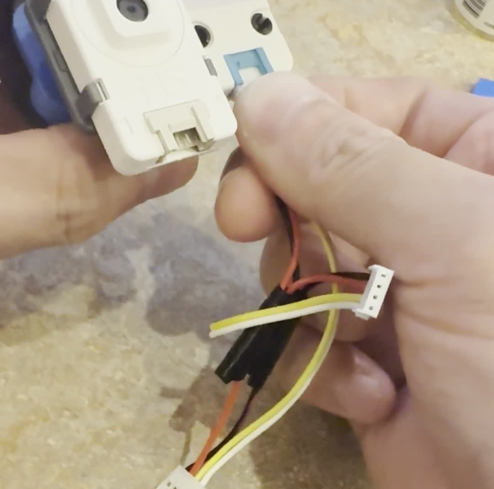
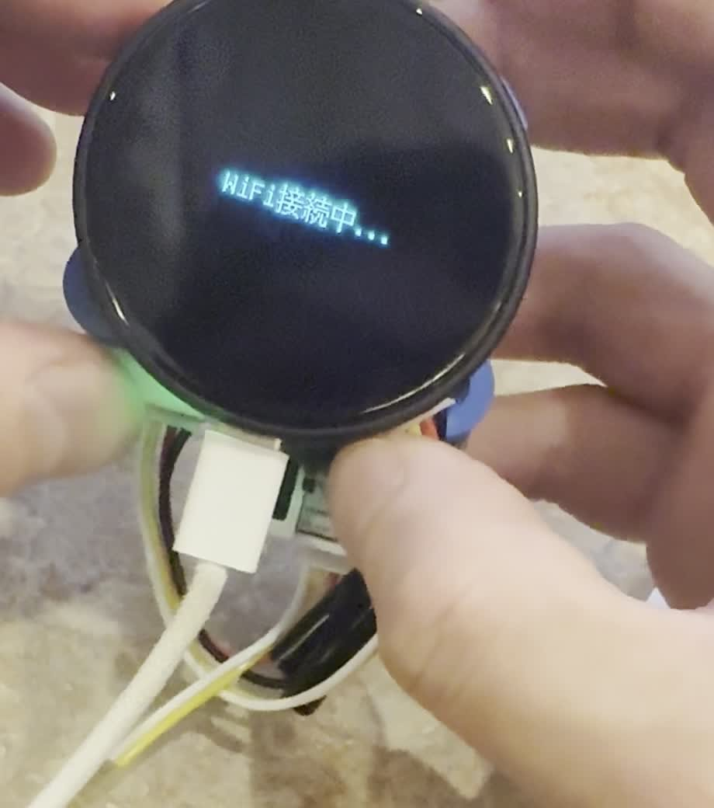
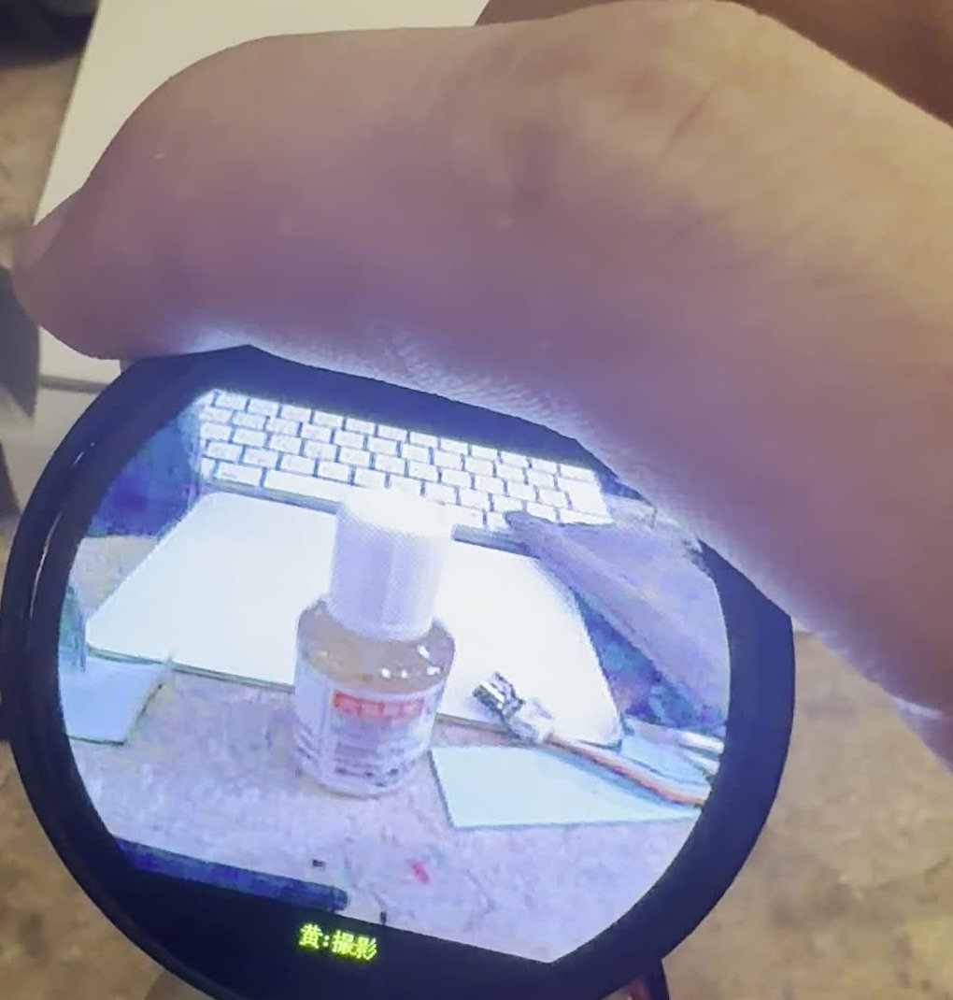
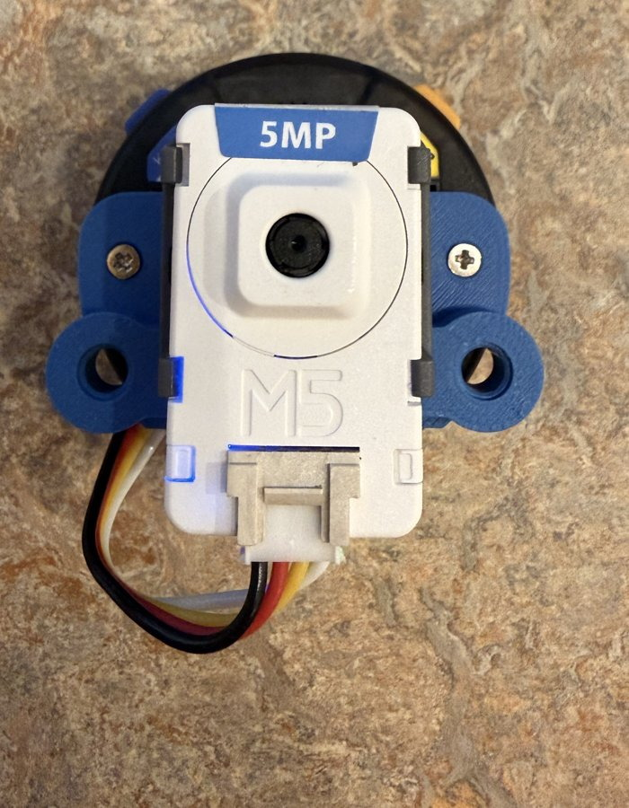
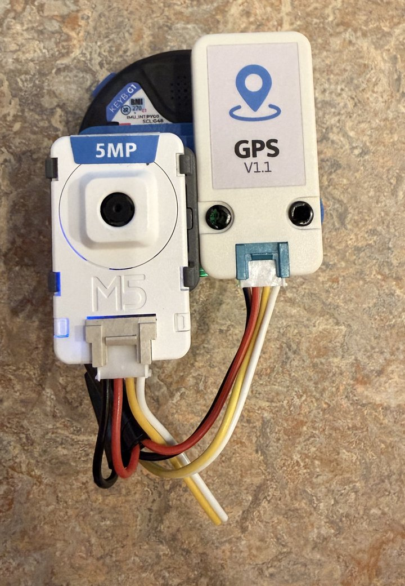

ToiCamera has a single Grove port, but using the camera and GPS at the same time means splitting it. The whole trick: “cut only the red and black wires.” ToiCameraの Grove ポートは 1 つですが、カメラと GPS を同時に使うにはこのポートを分岐します。ポイントは「切るのは赤・黒の 2 本だけ」。 ToiCamera只有一个 Grove 端口,想同时使用相机和 GPS 就需要把它分成两路。全部诀窍就是:「只剪红、黑两根线」。
The four Grove (HY2.0-4P) wires:Grove(HY2.0-4P)の 4 線の役割:Grove(HY2.0-4P)四根线的作用:
| Wire線色线色 | Signal信号信号 | Cameraカメラ相机 | GPS |
|---|---|---|---|
| Red赤红 | 5V | ✓ (power only)✓(給電のみ)✓(仅供电) | ✓ |
| Black黒黑 | GND | ✓ | ✓ |
| Yellow黄黄 | G10 (UART RX) | unused使わない不用 | ✓ (NMEA) |
| White白白 | G11 (UART TX) | unused使わない不用 | ✓ |
The camera talks over Wi-Fi, so it only needs 5V/GND power from the cable. カメラは Wi-Fi で通信するため 5V/GND の給電だけあれば動きます。 相机通过 Wi-Fi 通信,所以线缆上只需要 5V/GND 供电即可。
| Partパーツ部件 | Notes備考备注 |
|---|---|
| M5Stack StopWatch Dev KitM5Stack StopWatch 開発キットM5Stack StopWatch 开发套件 | ToiCamera itself (one Grove port = the reason this page exists)ToiCamera本体(Grove ポートが 1 つしかないのが本ページの出発点)ToiCamera本体(只有一个 Grove 端口,正是本页存在的原因) |
| Unit CamS3 5MPUnit CamS3 5MPUnit CamS3 5MP | Camera unit — powered from the Y branch, data over Wi-Fiカメラユニット — Y の枝から給電、データは Wi-Fi相机单元 — 由 Y 型分支供电,数据走 Wi-Fi |
| Unit GPS v1.1Unit GPS v1.1Unit GPS v1.1 | GPS unit — gets the untouched yellow/white UART lines on the trunkGPS ユニット — 幹線の黄・白(UART)を無傷のまま受け取る側GPS 单元 — 使用主干线上完好无损的黄/白 UART 线 |
| CLIP-BCLIP-BCLIP-B | M5Stack's official mounting clip for Unit-size modules, with LEGO-compatible holes. The CamS3 is held by CLIP-B snapped onto the printed back plate — no glue, no screws through the unit, and it clicks off in seconds.M5Stack 純正のユニット固定クリップ(レゴ互換穴付き)。CamS3 の固定にはこの CLIP-B を使用 — 3D プリントプレートに挟んでパチッと固定でき、接着剤もユニットへのネジ穴も不要。外すのも数秒です。M5Stack 官方的 Unit 固定夹(带乐高兼容孔)。CamS3 就是用 CLIP-B 固定的 — 卡在 3D 打印背板上即可,无需胶水、无需在单元上打螺丝,拆卸也只要几秒。 |
| Grove cables ×2Grove ケーブル ×2Grove 线 ×2 | The spares bundled with M5 units are fineM5 ユニット付属の予備で OKM5 单元附带的备用线即可 |


In practice, pre-tinning the stripped ends (a thin coat of solder) keeps the strands from fraying and makes the next twist much easier. Note in the photo: yellow and white are untouched everywhere. 実際の作業ではより線のほつれ防止に、剥いた先端へ予備はんだ(薄くはんだを乗せる)をしておくと、次のより合わせが楽になります。写真のとおり黄・白はどこも切っていないのがポイント。 实际操作中,给剥好的线头预镀锡(薄薄上一层焊锡)可防止线芯散开,下一步并绞也更轻松。注意照片中黄、白线处处完好。


[toi] gps: bytes=... keeps counting up通電前にテスターで 5V–GND 間のショートが無いことを確認 → 電源 ON → カメラの LED 点灯と、シリアルの [toi] gps: bytes=... 増加で確認通电前用万用表确认 5V–GND 无短路 → 开机 → 确认相机 LED 点亮、串口日志 [toi] gps: bytes=... 持续增长Plug the trunk connectors into ToiCamera and the GPS, and the branch connector into the camera (CamS3). ハーネスの幹線コネクタをToiCameraと GPS に、枝コネクタをカメラ(CamS3)に挿します。 把主干两端接到ToiCamera和 GPS,分支连接器接到相机(CamS3)。

Power on — the boot sequence runs and the camera's green LED lights up (= 5V from the branch is good). 電源を入れると起動シーケンスが走り、カメラの緑 LED が点灯します(=枝からの 5V 給電 OK)。 开机后启动流程运行,相机绿色 LED 点亮(= 分支 5V 供电正常)。

If the finder shows an image, the camera runs happily on Y-cable power alone (its data goes over Wi-Fi). ファインダーに映像が出れば、カメラは Y 字ケーブル経由の給電だけで正常動作しています(通信は Wi-Fi)。 取景器出现画面,说明相机仅靠 Y 型线供电即可正常工作(数据走 Wi-Fi)。

The two configurations side by side. No Y-cable needed while you use the camera alone (direct Grove connection) — build it when you add the GPS. 2 つの構成を並べるとこうなります。カメラ単体で使う間は Y ケーブル不要(付属 Grove ケーブルで直結のまま)。GPS を追加するときに作れば OK です。 两种配置并排对比。只用相机时不需要 Y 型线(Grove 直连即可)— 加装 GPS 时再做也不迟。
| Camera only (direct, no Y)カメラ単体(直結・Y 不要)仅相机(直连,无需 Y) | Camera + GPS (Y-cable)カメラ+GPS(Y 字ケーブル)相机 + GPS(Y 型线) |
|---|---|
 |
 |
Once the GPS gets a fix, the dashboard shows your location and the nearest station. GPS が測位すると、ダッシュボードに現在地と最寄り駅が表示されます。 GPS 定位成功后,仪表盘会显示当前位置和最近车站。
For mounting positions, see the print & assembly guide. 取り付け位置は 印刷・組立ガイド を参照してください。 安装位置请参考打印与组装指南。